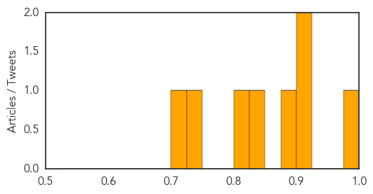
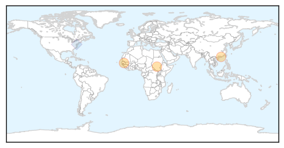
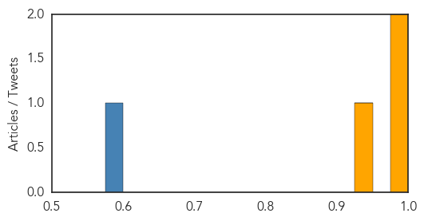

Measles
30-Day Web Trend
3 alerts, 0 warnings

30-Day Twitter Trend
0 alerts, 0 warnings

Article Locations

Article Confidences
Top Articles:
- 0.975
- State urges measles vaccination in light of recent outbreak
- 0.921
- Tennessee reports first case of measles in three years
- 0.913
- Lebanese unaware of polio risk, U.N. says
- 0.885
- Child With Measles Reported At Redding Elementary School
- 0.831
- Doctors urging patients to get measles vaccine
- 0.816
- Phoenix Avoids a Measles Outbreak
- 0.733
- Calgary offers more free measles vaccine clinics during outbreak
- 0.701
- How polio made an 'extraordinary' comeback
Top Tweets:
-
No tweets found for May 05, 2014
Ebola
30-Day Web Trend
0 alerts, 0 warnings

30-Day Twitter Trend
0 alerts, 0 warnings

Article Locations
Article Confidences
Top Articles:
Top Tweets:
- 0.599
- Updates on the first US case of MERS; @WHO update on ebola outbreak. HealthSecurity http://t.co/H1JhGCUg02